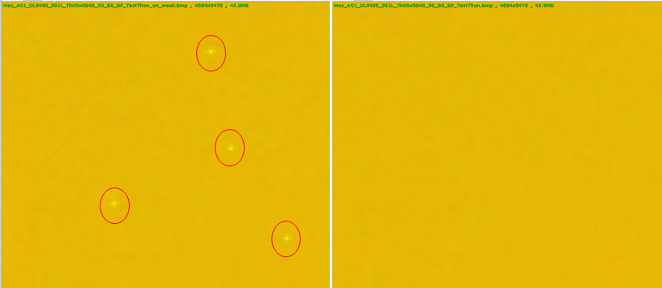

The following examples illustrate the effects of adjusting specific DSBPC parameter
values for a preview/video project.
Effects of the Fmax parameter
Figure : (L) Weak setting, Fmax=96, correct fewer bad pixels. Circles
around bad pixels not included in the detection. (R) Aggressive setting,
Fmax=65, correct more bad pixels
